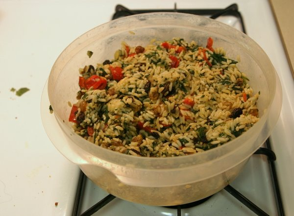
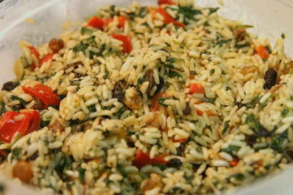

300 Trailer Simpsons Style
Take the greatest animated series in history and combine it with the audio from one of the most dramatic and breath taking films released this year and what do you get? The 300 Trailer: Simpsons Style

Take the greatest animated series in history and combine it with the audio from one of the most dramatic and breath taking films released this year and what do you get? The 300 Trailer: Simpsons Style
Remember all the fun you used to have as a kid with the ultimate squirt gun? This guy obviously couldn’t let go of his obsession.
I hope he has a lot of friends come over for a huge water battle!

You gotta love that little, balding music nerd. Moby has just opened up a site that lets anyone sign up and license his music. Well not anyone but particularly film music for “independent and non-profit filmmakers, film students, and anyone in need of free music for their independent, non-profit film, video, or short.” The word “licensing” immediately fills my head with anxiety about a long, drawn-out, expensive experience. But not ‘ol Moby. He is making his music free to anyone who doesn’t profit from their film or video project. If you are doing a commercial venture then you can apply for an “easy license” with any money that’s generated being given to the Humane Society. Not a bad deal for top notch accompanying film music.
Currently there are 3 pages of songs to choose from. While a lot of the songs are unreleased experiments. There are a few from some of his albums including all of the songs on his album Hotel – Ambient. I wish he had God Moving Over The Face Of The Waters on there. That is a beautiful score that would be interesting to release as a Garageband mix for budding composers to see how the song was layered and put together. Expect to see more artists opening up their work to the remix/mashup communities as it benefits everyone by advancing our culture.
Chicago pet store owner, Cindy Groenewold of Pet Luv Pet Center, is searching for 17 puppies who were stolen from her store. Apparently the pup-snatcher broke the front glass window of her store and stole boxers,beagles, golden retrievers, huskies as well as a puggle and a Pekinese. As you might imagine, the owner is quite upset. This is directly from the article:
The owner said she assumes the dogs will be sold at a flea market somewhere.
Ha! Pupies. Fleas. Get it? Well if the pet store business doesn’t work out for poor Cindy Groenewold, she could always fall back on comedy.
P.S. The owner said whoever took the dogs probably wasn’t very gentle with them. Oh, cruel world.
A New York web design start up put a want ad on Craigslist.org for a LOLCode developer. LOLCode is the humorous programming language inspired by the grammatically-discombobulated LOLCats.
YOU CAN HAS CHEEZEBURGER?
YOU HAS A FLAVUR?
If so, you may be the right fit for this Midtown Manhattan Web Design Startup! We are a small company looking for a Senior LOLCode Developer, preferably with at least 1 month experience developing LOLapps. Please send a resume, along with links to any web-based LOLapps you have developed.KTHXBYE
As the creator of LOL translator, TXT2LOL.com, I had to send a response:
Hiya!
i’s a web developer wif excellent LOLCode skillz. I builded a lolcat trahnslatah which currently resides at txt2lol.com doan youz think iz cool?
bai
I imagine the are getting a large number of responses considering it was featured on BoingBoing and the original ad is now gone.
Tomorrow is the annual company potluck at work and rather than take the easy way out and buying a dish, I decided to actually cook something. Cooking is certainly not my forte as my regular dinners consist of Health Choice microwaveable dinners. A tantalizing Mediterranean Spinach and Rice dish from the Sun-Maid Raisins recipe site seemed like a good challenge. It helped that I assisted Kristina in making this one time, so I was pretty familiar with the process
Everything was smooth sailing for me except for one thing. I thought a clove was a whole garlic bulb not the little pieces that break apart when you peel off the skin. Oops! The recipe called for “4 cloves of finely chopped garlic.” I was hacking away for a good 20 minutes when my roommate walked into the kitchen and exclaimed at the large amount of garlic I was preparing. We salvaged most of the left overs in a small Tupperware container which he will most likely use later. I am happy the dish turned out just fine but I do not look forward to cooking for a while. Those microwave dinners at $2.89 a piece are well worth bypassing the hassles of preparing, storing, and cooking other foods. Here are two photos of my culinary masterpiece:


Get Rich Slowly is holding a contest asking for people to submit their financial success stories. With this in mind, I began to reflect on where I am today in my experience with money.

I was raised to be financially responsible from a young age. When I was comfortable with the idea of an allowance somewhere near the first grade my Dad set up a personal Heimlich bank complete with my own custom printed checks. He wanted to instill the idea of writing out checks for things I wanted to buy as well as going over a monthly bank statement. I should clarify this wasn’t a real bank but rather an imaginary one between my parents, who would be the only people on the planet that would recognize my checks, and I. The habit has stuck with me as I now use the elaborate receipt filing system on my real bills that they taught me oh so long ago. It wasn’t until college when I realized how ahead of the game I was, personal finance wise.
Not only did I grow up ingrained with good money habits, but I was also genuinely interested in learning all that I could about finance issues. My friends in college certainly didn’t seem to think to much about their finances as my roommate used to throw away his bank statements without even opening the envelope and the people next door relied on unemployment benefits to help pay for their party habits. It was also a wake up call to see many people were paying for college by taking out student loans in their own names unlike my extremely fortunate situation of a full ride from Mom and Dad.
After college I was already ahead compared to my debt-laden classmates and I landed a good job with decent benefits. I knew I was in a special situation being 22 and debt free. I was anxious for my 6-month waiting period for my retirement benefits to kick in so I could contribute as much as I could into my 401(k). A couple of months ago I set up my 16% contribution with confidence that I was doing the right thing thanks to compounding interest and time being on my side. In August the company announced a Roth 401(k) option that would let my money grow tax free and because I had been reading up about these things previously, I immediately knew it was the perfect option for me to take advantage of.
In the end, my greatest personal finance success has to be the knowledge and wisdom I acquired early on to be able to capitalize on this once in a lifetime opportunity. Money can buy lots of things, but it certainly cannot buy more time.
Thank you Mom, Dad, J.D. at GetRichSlowly.org, and all of the personal finance sites out there sharing their wisdom.
The popular online web magazine, A List Apart, conducted a survey of web professionals in April 2007 via their website. This week they finally released the results in a massive, though well designed, 80+ page PDF.
Being the first major survey of the web industry, I, and many others I’m sure, was anxious to see how I stacked up. The survey focused on the core areas of classification (gender, ethnicity, location etc.), education, work and job titles, and money. There are too many findings to even begin listing here but the PDF does a great job at explaining their conclusions with many, many graphs. Speaking of data, A List Apart is giving away all of the anonymized raw data for people to dig through and reach their own conclusions.

I can’t wait to see the results from the next survey to compare the changes in the industry from this year.
Brian Liloia used to blog alongside me at DVGuru.com. When the site was near it’s final days he mentioned going to live at an ecovillage where the community practices low-impact, sustainable living. He graciously took a few minutes to answer some questions I had.

What is Dancing Rabbit?
Dancing Rabbit Ecovillage is an intentional community located in northeastern Missouri, and it is currently composed of about 35 total members. We live in a small, off-the-grid village setting on 280 acres of land, with organic gardens and buildings made out of earthen and recycled materials. All of our power comes from renewable resources, and we catch rainwater off of our roofs for all our water needs. To put it simply, we’re a group of people devoted to the idea of living sustainably, with a minimal impact on the planet’s ecosystems.
What made you decide to become a part of Dancing Rabbit?
I originally visited Dancing Rabbit last summer, shortly after I graduated from college. During my three week visitor period, I knew pretty quickly that I wanted to come back as a full-time resident to continue to pursue my interests in living sustainably. Before I had visited Dancing Rabbit, I knew that I wanted to pursue a more self-sufficient, low-impact, and simple lifestyle, but I didn’t know how to go about it within the confines of mainstream culture. When I found out about Dancing Rabbit, I knew it was possible, and it was inspiring to see a group of people already doing what I envisioned as my goal.
Are you a permananet member? Do you live there year round? How long have you lived there?
As I write this, I am not necessarily a “permanent” member. There are no “permanent” members. Anyone can leave whenever they want, that is to say. However, I am currently a resident, and I’ve lived here for six months so far. I’ve recently put in a letter of intent for membership. A member is someone that knows that want to spend significant time here, and has the ability to build his/her own house, unlike a resident. I plan on staying on board for a while yet, maybe another year or so. We shall see.

What is an ecovillage?
An ecovillage is a community with the goal of living sustainably, with a minimal impact on the environment. This generally entails a radically different lifestyle from that of the mainstream culture. Living sustainably might be accomplished by using renewable energy, like solar and wind power, driving less (Dancing Rabbit owns two biodiesel-fueled vehicles for all of its 35 members), catching rainwater for cooking and drinking, eating locally and organically grown food, sharing resources, and generally consuming less.
Is there anything you miss about non-ecovillage living?
Not really, to be honest. I feel much more at ease with and confident about this lifestyle, and I love the culture that has taken shape here at Dancing Rabbit. It’s very open and honest and peaceful and healthy. There’s always work to be done, and good chunks of downtime, too, of course. Only once in a while do I miss things like going out to movies or moseying about New York City. (I’m originally from the suburbs around NYC.) All in all, life is good here.
What is a typical day like at dancing Rabbit?
This is an often-asked question, but still not an easy one to answer. Every day is pretty different from the next. But there are some things they all share in common. I generally wake up around 8:00 and eat breakfast. Then I usually check my email and do some writing. (I’m a freelance blogger.) After that, I might help someone out with some work they need to get done. (Right now, I’m “work exchanging” for a friend who is building his house.) At 12:00, I eat lunch with my vegan food co-op members. After that, I might continue doing work (if there’s any to be done), go for a bike ride, read a book, or do video work. (I also run a video blog here, called Dancing Rabbit TV). If I’m the cook for my food co-op that night, I might start cooking around 3:00-3:30. At 6:30, I eat dinner. Afterwards, I might play a board game with some folks, call my family or friends, read a book, watch a movie, or just hang out. Then I’ll hit the hay around 10:00-11:30, depending on how tired I am.

What do you mean by sustainable living and how is it important to the environment?
A sustainable lifestyle is one that is capable of continuing indefinitely. I, among many others, believe that the typical lifestyle lead by most Americans is highly unsustainable, and is not capable of continuing much further into the future. As a civilization, we are desperately dependent on cheap energy, particularly oil, which fuels every facet of modern living, everything from transportation to manufacturing to agriculture and everything in-between. We generally disregard how our actions have an incredibly damaging effect on the environment. Without realizing just how much damage we are causing to the planet, we will leave serious scars on the environment which may be felt by many future generations. I think it’s important that we recognize this and learn to live in harmony with the earth’s ecosystems, so life, both human and non-human, can continue on more peacefully, healthfully, and indefinitely.
What are some things people can do to be more sustainable without moving out to Dancing Rabbit?
There’s plenty that people can do to live more sustainably. The first thing to do is educate yourself and others about the environment, about our culture, and about sustainable living. As far as practical things go, you can start by consuming less and realizing that you can’t just “buy” sustainability. Try eating locally and organically grown foods, those raised without pesticides and other harmful chemicals, and those that haven’t traveled 2,000 miles to reach your dinner table. You can also try driving less. Consider walking or biking, or ridesharing and public transportation, if possible. See if you can reduce your commute by moving closer to your job. Use energy at home efficiently, and avoid buying power-hungry appliances. Use water conservatively. Recycle your trash and compost your food scraps. All of these small actions can help. The main thing is to realize just how much we consume to accomplish everyday tasks, and then try to limit what we can.
More info about the Dancing Rabbit Ecovillage can be found at http://dancingrabbit.org/ and their behind the scenes video blog, Dancing Rabbit TV. Brian has also posted a semi photo essay on Facebook showing more day to day living at Dancing Rabbit.
This post is part of Blog Action Day

The Internet seems love photos of seemingly normal things in a weird context. For example, take the tourist of death image that made its way around the Internet via e-mail a couple of years ago.

Many believed this photo was legitimate but according to online urban legend debunking site Snopes.com, there were too many physical and logistical errors with the image. Hence forth, the Internet began making mashups putting the tourist image into various other situations.
The pink shirt guy is the same sort of meme. Take a look at the original photo…

The scene looks rather serious and yet pink shirt guy breaks up the drama with his calm demeanor and smooth yet refreshing attire. No one seems to know who pink shirt guy is but it certainly has sparked a series of mashups with his image popping up in a variety of places.
HidePinkShirtGuy.com hopes to take the fad offline by providing various printable versions that people can use to hide in the real world. The site accepts submissions of the pink shirt guy blended into the real world with the best rated photos featured on the homepage. That’s about all there is to the site but it was mentioned on TechCrunch in a post about web 2.0 bubble indicators.
So like the site says, join the revolution by making your own pink shirt guy and hiding him somewhere in the real world.